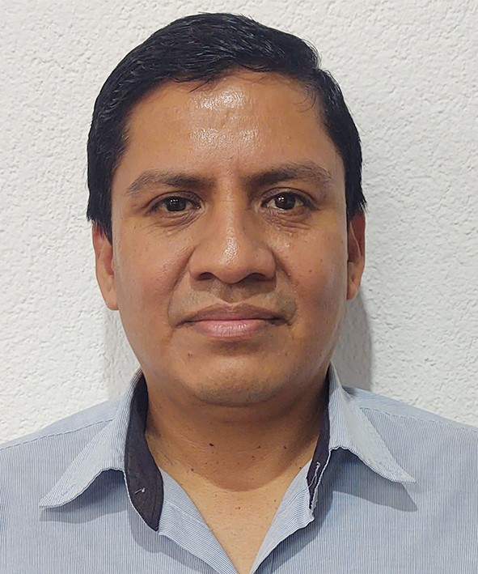

Proyecto 1: Sitio web bitacora kilometraje por voz
Desarrollé un sitio web para gestionar mi bitácora de kilometraje utilizando HTML, CSS y JavaScript para mostrar mi portafolio y habilidades.

Hola, soy German Contreras Jacinto de Guatemala, estudiante de desarrollo web en el bootcamp de Python y Frontend en TECSUP Peru. Me apasiona la tecnología y estoy en constante aprendizaje para mejorar mis habilidades en programación y diseño web.
Guatemala es un país ubicado en América Central, conocido por su rica historia, cultura y paisajes naturales. Es famoso por sus ruinas mayas, volcanes y lagos impresionantes.
Desarrollé un sitio web para gestionar mi bitácora de kilometraje utilizando HTML, CSS y JavaScript para mostrar mi portafolio y habilidades.
Una aplicacion para captura de datos de temperatura, humedad y presión utilizando Raspberry Pi y sensores, con Azure.
Puedes contactarme a través de mi correo electrónico: